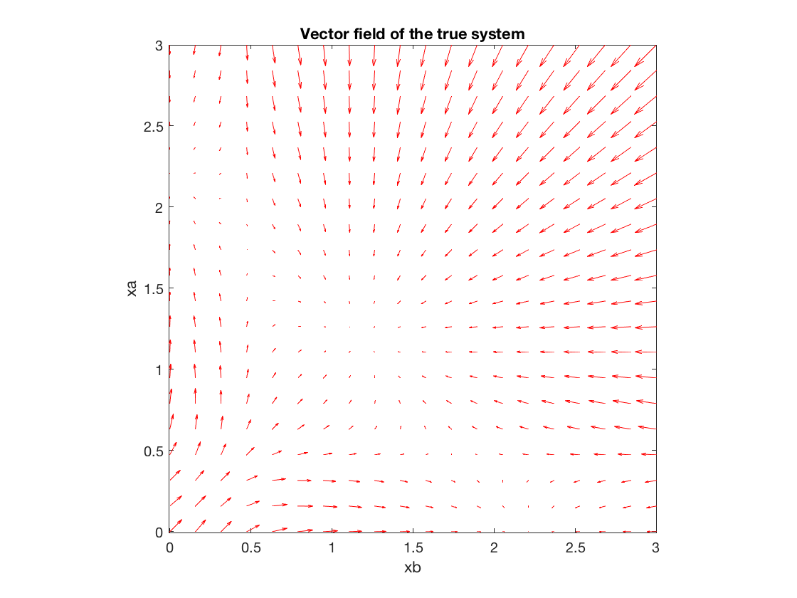
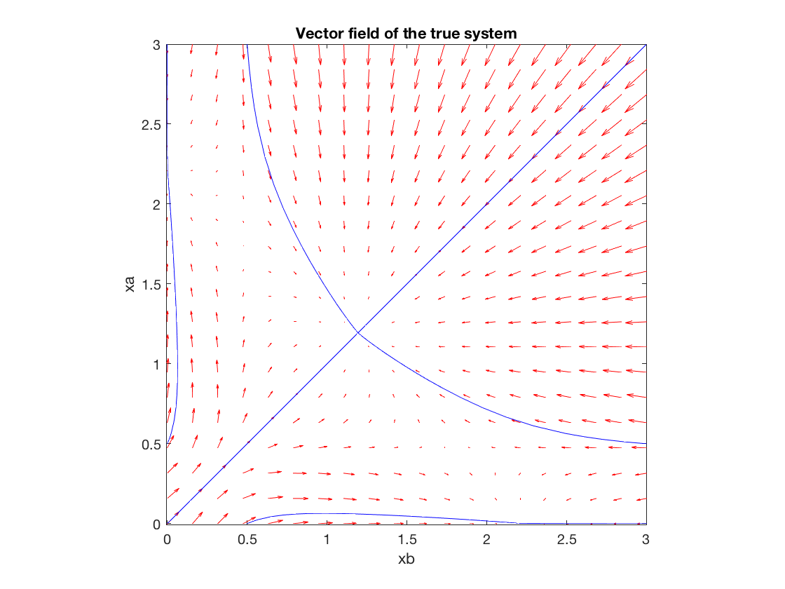
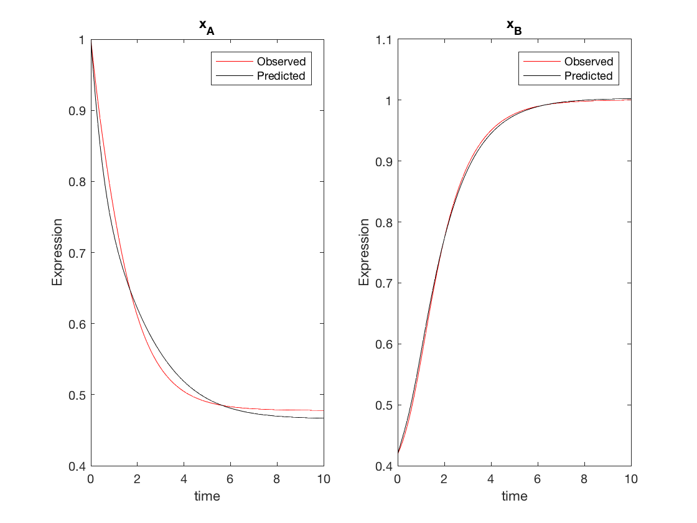
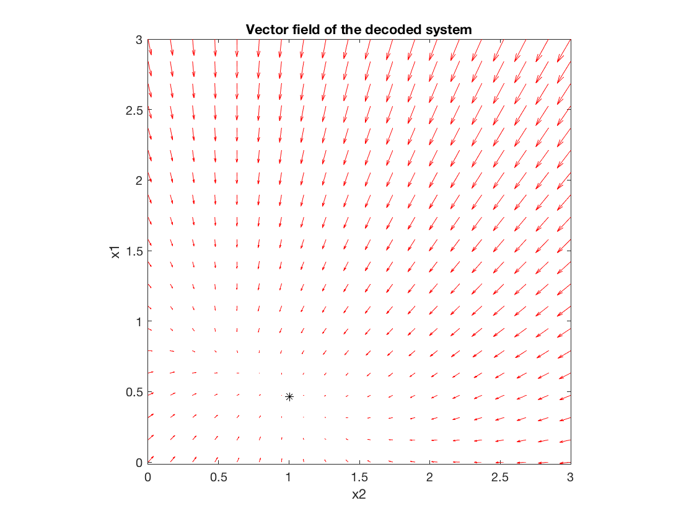
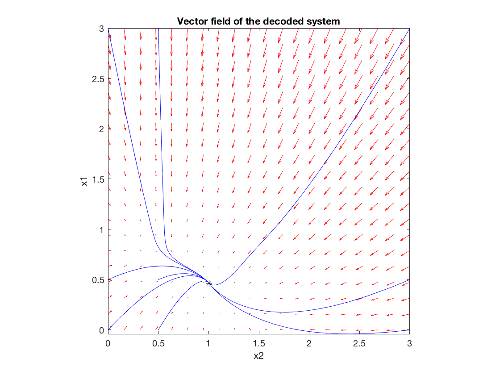

Contents
- Main
- Fixed points of the "true system" --> xa'=0 and xb'=0 simultaneously
- Computing the vector field for the "true system"
- Plotting solutions on the vector field of the "true system"
- Generate data over time
- Optimization set-up particle swarm
- Fixed points of the solution system --> x1'=0 and x2'=0 simultaneously
- Computing the vector field for the "decoded system"
- Plotting solutions on the vector field of the "decoded system"
- ODEs for generating data
- Model for decoding data
% VSRP projec: Learning Generative Causal Models from Sparse Temporal Observations during Cellular Reprogramming % King Abdullah University of Science and Technology (KAUST) % Developer: Sara Jimenez Correa (Living Systems Laboratory) % Advisor: Jesper Tegner clc; clear; close all; tic
Main
% The following variables are used in the main script and in the "model % data base" (solutions) global xobs global t0 global xpre global x0
Fixed points of the "true system" --> xa'=0 and xb'=0 simultaneously
syms xa xb Xss = myfun(0,[xa;xb]); % Steady state eq_a = Xss(1) == 0; eq_b = Xss(2) == 0; [xae,xbe]=solve(eq_a,eq_b,xa,xb); xae=double(xae); xbe=double(xbe);
Computing the vector field for the "true system"
% Initial conditions equally distributed xa=linspace(0,3,20); xb=linspace(0,3,20); [xa1,xb1]=meshgrid(xa,xb); % Pre-location u=zeros(size(xa1)); v=zeros(size(xb1)); for i = 1:numel(xa1) Xprime = myfun(0,[xa1(i);xb1(i)]); % Solve at time zero u(i) = Xprime(1); v(i) = Xprime(2); end figure(1) quiver(xb1,xa1,v,u,'r'),xlabel('xb'),ylabel('xa'),title('Vector field of the true system'),axis tight equal;
Plotting solutions on the vector field of the "true system"
hold on for xa0 = [0.5 0.5 0 3.0] for xb0 = [3.0 0 0.5 0] [t, S] = ode45(@myfun,[0,50],[xa0,xb0]); plot(S(:,2),S(:,1),'b') end end
Generate data over time
% Initial conditions t0=[0:0.1:10]; xa0=2.5; xb0=0.5; xi=[xa0 xb0]; [t x]=ode45(@myfun,t0,xi); % Normalization --> values between 0 and 1 xa=x(:,1); xa=x(:,1)./max(xa); xb=x(:,2); xb=x(:,2)./max(xb); xobs=[xa xb]; % Initial conditions for the fitting --> normalized values x0=[xobs(1,1) xobs(1,2)];
Optimization set-up particle swarm
fun=@solutions; % "model data base" % Parameter search space ub=[1,1,1,1,1,1,1,1,1,1,1,1]; lb=[-1,-1,-1,-1,-1,-1,-1,-1,-1,-1,-1,-1]; options=optimoptions('particleswarm','SwarmSize',100,'HybridFcn',@fmincon,'Display','iter'); rng default % For reproducibility nvars = 12; % Number of parameters to estimate [param] = particleswarm(fun,nvars,lb,ub,options); figure(2) subplot(1,2,1), plot(t,xobs(:,1),'r',t,xpre(:,1),'k'),title('x_A'),legend('Observed','Predicted'),xlabel('time'),ylabel('Expression'); hold on; subplot(1,2,2), plot(t,xobs(:,2),'r',t,xpre(:,2),'k'),title('x_B');legend('Observed','Predicted'),xlabel('time'),ylabel('Expression'); hold on;
Fixed points of the solution system --> x1'=0 and x2'=0 simultaneously
syms x1 x2 Xss_s = sigmoidal_s(0,[x1;x2],param); % Steady state of the solution system eq_1 = Xss_s(1) == 0; eq_2 = Xss_s(2) == 0; [x1e,x2e]=solve(eq_1,eq_2,x1,x2); x1e=double(x1e); x2e=double(x2e);
Warning: Cannot solve symbolically. Returning a numeric approximation instead.
Computing the vector field for the "decoded system"
% Initial conditions equally distributed x1=linspace(0,3,20); x2=linspace(0,3,20); [x1_s,x2_s]=meshgrid(x1,x2); % Pre-location u_s=zeros(size(x1_s)); v_s=zeros(size(x2_s)); t=0; for i = 1:numel(x1_s) Xprime_s = sigmoidal_s(t,[x1_s(i);x2_s(i)],param); u_s(i) = Xprime_s(1); v_s(i) = Xprime_s(2); end figure(3) quiver(x2_s,x1_s,v_s,u_s,'r'),xlabel('x2'),ylabel('x1'),title('Vector field of the decoded system'),axis tight equal; hold on plot(x2e,x1e,'*k') % Fixed point
Plotting solutions on the vector field of the "decoded system"
hold on for x10 = [0.5 0.5 0 3.0] for x20 = [3.0 0 0.5 0] [t, S] = ode45(@sigmoidal_s,[0,20],[x10,x20],[],param); plot(S(:,2),S(:,1),'b') end end toc
Elapsed time is 43.672998 seconds.
ODEs for generating data
% Model for generating data % Following: Wang et al. 2010. Biophysical Journal Volume 99 July 2010 29?39. https://doi.org/10.1016/j.bpj.2010.03.058 function dx = myfun(t,x) % Parameters of the model for generating data qa=1; qb=1; ka=1; kb=1; S=0.5; n=4; pa=1.2; % High autoactivation of xa pb=1.2; % High expression of xb % pa=0.6; % Low autoactivation of xa % pb=0.6; % Low autoactivation of xb xa=x(1); xb=x(2); dxa=(pa.*xa.^n)./(S^n+xa.^n)+(qa*S^n)./(S^n+xb.^n)-ka.*xa; dxb=(pb.*xb.^n)./(S^n+xb.^n)+(qb*S^n)./(S^n+xa.^n)-kb.*xb; dx=[dxa dxb]'; end
Model for decoding data
% Model of solutions: S-Systems % Following: Daniels, B. C., & Nemenman, I. (2015). Nature Communications, 6, 1?8. https://doi.org/10.1038/ncomms9133 function r=solutions(param) global xobs global t0 global xpre global x0 [t, x]=ode45(@sigmoidal,t0,x0); % The function change according to the model that we want to test xpre=x; function dx = sigmoidal(t,x) % 12 parameters x1=x(1); x2=x(2); % Sigmoid x1: a1=param(1), b1=param(2), c1=param(3). s1=param(1)+(1-param(1))./(1+exp((-4*param(2)/param(3))*(x1-param(3))/(1-param(1)))); % Sigmoid x2: a2=param(4), b2=param(5), c2=param(6). s2=param(4)+(1-param(4))./(1+exp((-4*param(5)/param(6))*(x2-param(6))/(1-param(4)))); % Input xI=0; % W11=param(9), W12=param(10) dx1=-x1./param(7)+param(9).*s1+param(10).*s2+xI; % W21=param(11), W22=param(12) dx2=-x2./param(8)+param(11).*s1+param(12).*s2+xI; dx=[dx1 dx2]'; end % Cost function ||xobs-xpre|| r=sqrt(sum((xpre(:,1)-xobs(:,1)).^2))+sqrt(sum((xpre(:,2)-xobs(:,2)).^2)); end function dx = sigmoidal_s(t,x,param) % 12 parameters x1=x(1); x2=x(2); % Sigmoid x1: a1=param(1), b1=param(2), c1=param(3). s1=param(1)+(1-param(1))./(1+exp((-4*param(2)/param(3))*(x1-param(3))/(1-param(1)))); % Sigmoid x2: a2=param(4), b2=param(5), c2=param(6). s2=param(4)+(1-param(4))./(1+exp((-4*param(5)/param(6))*(x2-param(6))/(1-param(4)))); % Input xI=0; % W11=param(9), W12=param(10) dx1=-x1./param(7)+param(9).*s1+param(10).*s2+xI; % W21=param(11), W22=param(12) dx2=-x2./param(8)+param(11).*s1+param(12).*s2+xI; dx=[dx1 dx2]'; end
Best Mean Stall
Iteration f-count f(x) f(x) Iterations
0 100 9.265 NaN 0
1 200 7.194 3.372e+73 0
2 300 3.381 3.128e+130 0
3 400 2.047 2.4e+65 0
4 500 1.472 Inf 0
5 600 1.472 3.638e+104 1
6 700 1.472 8.723e+68 2
7 800 1.472 2.995e+115 3
8 900 1.472 Inf 4
9 1000 1.472 1.942e+70 5
10 1100 1.472 2.135e+99 6
11 1200 1.15 9.783e+76 0
12 1300 1.026 1.039e+37 0
13 1400 1.026 8.514e+08 1
14 1500 0.9392 1.899e+09 0
15 1600 0.9392 7.309 1
16 1700 0.7427 1.914e+111 0
17 1800 0.7427 3.165e+38 1
18 1900 0.7297 5.412 0
19 2000 0.6311 6.011 0
20 2100 0.6311 871.2 1
21 2200 0.6311 6.753e+33 2
22 2300 0.4416 4.774 0
23 2400 0.4416 4.29e+05 1
24 2500 0.4416 4.605e+93 2
25 2600 0.4251 3.359e+24 0
26 2700 0.3978 3.828 0
27 2800 0.3978 2.286e+124 1
28 2900 0.3821 3.877 0
29 3000 0.3742 Inf 0
30 3100 0.3742 3.587 1
Best Mean Stall
Iteration f-count f(x) f(x) Iterations
31 3200 0.3717 9237 0
32 3300 0.3706 3.013 0
33 3400 0.3706 6.069e+27 0
34 3500 0.3628 8.225e+85 0
35 3600 0.3628 7.135e+13 1
36 3700 0.3615 3.657 0
37 3800 0.3581 1.284e+07 0
38 3900 0.3553 6.802e+07 0
39 4000 0.3509 7.57e+08 0
40 4100 0.3509 863.2 1
41 4200 0.3439 2.425e+56 0
42 4300 0.3439 4.498 1
43 4400 0.3439 2.175e+15 2
44 4500 0.3405 347.9 0
45 4600 0.3405 4.405 1
46 4700 0.3405 1.683e+23 2
47 4800 0.3405 1254 3
48 4900 0.3118 3.982e+08 0
49 5000 0.3118 3.565e+24 1
50 5100 0.3118 1.911e+17 2
51 5200 0.3118 1.806e+16 3
52 5300 0.3118 6728 4
53 5400 0.2966 3.124 0
54 5500 0.2966 1.015e+08 1
55 5600 0.2927 2.842 0
56 5700 0.2886 1.012e+50 0
57 5800 0.2778 2.129 0
58 5900 0.2707 3.696e+08 0
59 6000 0.2651 2.817e+07 0
60 6100 0.2598 1.511e+10 0
Best Mean Stall
Iteration f-count f(x) f(x) Iterations
61 6200 0.256 2.103e+23 0
62 6300 0.2517 1.621e+05 0
63 6400 0.2465 1.666e+10 0
64 6500 0.2465 1.655e+18 1
65 6600 0.2416 659 0
66 6700 0.2416 1.396e+06 1
67 6800 0.2415 1.514e+35 0
68 6900 0.2357 9.681e+17 0
69 7000 0.2357 5.764e+23 1
70 7100 0.2357 2.956 2
71 7200 0.2357 3.205 3
72 7300 0.2357 1.891e+51 4
73 7400 0.2357 1.441e+22 5
74 7500 0.2357 1.007e+10 6
75 7600 0.2357 2.655 7
76 7700 0.2357 Inf 8
77 7800 0.2335 3.396e+37 0
78 7900 0.2335 8.047e+67 1
79 8000 0.2315 1.811 0
80 8100 0.2306 2.017 0
81 8200 0.2257 Inf 0
82 8300 0.2242 5.52e+55 0
83 8400 0.2214 2.139 0
84 8500 0.2214 2.631e+26 0
85 8600 0.2214 5.261e+37 1
86 8700 0.2211 77.73 0
87 8800 0.2206 1.897e+10 0
88 8900 0.2203 7.8e+09 0
89 9000 0.2201 2.972e+12 0
90 9100 0.2186 8370 0
Best Mean Stall
Iteration f-count f(x) f(x) Iterations
91 9200 0.218 950.8 0
92 9300 0.2178 2.341 0
93 9400 0.2178 2.22e+16 1
94 9500 0.2178 2.362e+32 2
95 9600 0.2178 4.874e+04 3
96 9700 0.2178 1.695e+08 4
97 9800 0.2178 1.837e+37 5
98 9900 0.2178 7.429e+33 6
99 10000 0.2178 6.609e+23 7
100 10100 0.2178 1.791e+105 8
101 10200 0.2177 1.808 0
102 10300 0.2175 1.094e+65 0
103 10400 0.2169 1.643 0
104 10500 0.2169 4.256e+26 0
105 10600 0.2167 5.508e+147 0
106 10700 0.2164 1.767 0
107 10800 0.2164 1.549 0
108 10900 0.2162 821.1 0
109 11000 0.2161 1.515 0
110 11100 0.2158 5.471e+13 0
111 11200 0.2157 1.757e+51 0
112 11300 0.2154 1.02e+67 0
113 11400 0.215 5.957e+05 0
114 11500 0.2147 4.51e+28 0
115 11600 0.2145 649.8 0
116 11700 0.2145 1.89 1
117 11800 0.2145 747.9 2
118 11900 0.2145 1.21e+05 3
119 12000 0.2145 6.167e+15 4
120 12100 0.2145 2394 5
Best Mean Stall
Iteration f-count f(x) f(x) Iterations
121 12200 0.2145 1.866 6
122 12300 0.2145 1.707 7
123 12400 0.2145 1.334e+53 8
124 12500 0.2145 3.557e+04 9
125 12600 0.2144 1.488e+95 0
126 12700 0.2143 1.19 0
127 12800 0.2143 1.278e+18 0
128 12900 0.2142 1.383 0
129 13000 0.2141 3.629e+57 0
130 13100 0.2141 3.226e+05 1
131 13200 0.214 1.306 0
132 13300 0.214 Inf 0
133 13400 0.214 1.323 0
134 13500 0.2139 1.396 0
135 13600 0.2139 7.308e+13 1
136 13700 0.2139 1490 0
137 13800 0.2138 3.722e+19 0
138 13900 0.2137 1.243 0
139 14000 0.2132 541.5 0
140 14100 0.2128 3.016e+51 0
141 14200 0.2128 2.05 1
142 14300 0.2127 2.957e+09 0
143 14400 0.2127 648.5 1
144 14500 0.2127 1.838 2
145 14600 0.2127 1.678 3
146 14700 0.2127 5.369e+95 4
147 14800 0.2127 1.657 5
148 14900 0.2127 1.514 6
149 15000 0.2127 6.975e+40 7
150 15100 0.2127 2.114e+21 8
Best Mean Stall
Iteration f-count f(x) f(x) Iterations
151 15200 0.2127 1.562 9
152 15300 0.2126 4772 0
153 15400 0.2126 2.02e+19 0
154 15500 0.2125 2.202e+11 0
155 15600 0.2125 1.471e+10 0
156 15700 0.2125 4425 1
157 15800 0.2125 1.795e+27 0
158 15900 0.2124 1.168 0
159 16000 0.2124 1.927e+06 0
160 16100 0.2124 1.294 0
161 16200 0.2124 2.273e+18 0
162 16300 0.2123 1.322 0
163 16400 0.2122 1.021 0
164 16500 0.212 1.695e+43 0
165 16600 0.2118 6.69e+08 0
166 16700 0.2118 1.122e+04 1
167 16800 0.2114 2803 0
168 16900 0.2114 2.113e+86 1
169 17000 0.2114 1.33 2
170 17100 0.2114 1.482 3
171 17200 0.2114 701.7 4
172 17300 0.2114 521.1 5
173 17400 0.2114 1.76e+36 6
174 17500 0.2114 425.3 7
175 17600 0.2114 2.647e+101 8
176 17700 0.2114 1.901e+19 9
177 17800 0.2112 2.095e+13 0
178 17900 0.2112 0.9367 1
179 18000 0.2112 2.045e+64 0
180 18100 0.2112 Inf 0
Best Mean Stall
Iteration f-count f(x) f(x) Iterations
181 18200 0.211 5.258e+08 0
182 18300 0.211 Inf 1
183 18400 0.211 1.074 2
184 18500 0.211 1.825e+27 0
185 18600 0.211 2.289e+17 0
186 18700 0.211 2.068e+47 1
187 18800 0.211 1.06e+05 0
188 18900 0.211 2178 0
189 19000 0.211 0.8125 0
190 19100 0.2109 6.279e+17 0
191 19200 0.2109 9.846e+06 0
192 19300 0.2109 0.8534 0
193 19400 0.2108 4.854e+31 0
194 19500 0.2108 6.641e+08 0
195 19600 0.2108 1.176e+25 1
196 19700 0.2107 3.104e+09 0
197 19800 0.2106 5.177e+04 0
198 19900 0.2105 583.2 0
199 20000 0.2105 4.184e+10 1
200 20100 0.21 6.941e+08 0
201 20200 0.2097 1.142 0
202 20300 0.2097 2.252e+13 1
203 20400 0.2097 5.528e+04 2
204 20500 0.2097 5.096e+05 3
205 20600 0.2097 4.432e+31 4
206 20700 0.2097 619.6 5
207 20800 0.2097 1.364 6
208 20900 0.2097 1.129e+06 7
209 21000 0.2097 2.509e+13 8
210 21100 0.2097 0.8488 9
Best Mean Stall
Iteration f-count f(x) f(x) Iterations
211 21200 0.2097 2.74e+52 10
212 21300 0.2097 8.818e+99 11
213 21400 0.2097 0.9983 12
214 21500 0.2097 2.863e+09 0
215 21600 0.2096 1.012 0
216 21700 0.2095 1.238 0
217 21800 0.2095 1.357e+13 0
218 21900 0.2095 0.6963 0
219 22000 0.2095 5.905e+10 0
220 22100 0.2095 8.176e+54 0
221 22200 0.2095 635.8 0
222 22300 0.2095 7.486e+43 0
223 22400 0.2094 1.026 0
224 22500 0.2094 1.143e+50 1
225 22600 0.2094 0.7881 0
226 22700 0.2094 4.2e+09 0
227 22800 0.2093 1.558e+18 0
228 22900 0.2093 1.67e+05 1
229 23000 0.2092 0.8686 0
230 23100 0.2092 2.369e+07 0
231 23200 0.2092 1.056e+21 1
232 23300 0.2092 8.326e+61 2
233 23400 0.2092 103.9 3
234 23500 0.2092 1.084e+10 4
235 23600 0.2092 2.518e+07 5
236 23700 0.2092 125.2 6
237 23800 0.2092 3.15e+13 7
238 23900 0.2092 1.036 8
239 24000 0.2092 0.9338 0
240 24100 0.2092 0.8218 0
Best Mean Stall
Iteration f-count f(x) f(x) Iterations
241 24200 0.2092 1.55e+38 0
242 24300 0.2092 2.908e+08 0
243 24400 0.2092 715.5 0
244 24500 0.2091 0.8376 0
245 24600 0.2091 0.8464 0
246 24700 0.2091 5.1e+16 0
247 24800 0.2091 4.172e+24 1
248 24900 0.2091 0.9533 0
249 25000 0.2091 0.9624 0
250 25100 0.2091 4.671e+08 0
251 25200 0.2091 1.454e+151 0
252 25300 0.2091 5.582e+17 1
253 25400 0.2091 7.3e+07 0
254 25500 0.2091 9.691e+08 0
255 25600 0.2091 2.702e+07 1
256 25700 0.2091 4.371e+04 2
257 25800 0.2091 9.037e+46 3
258 25900 0.2091 481.8 4
259 26000 0.2091 1.185 5
260 26100 0.2091 3.122e+10 6
261 26200 0.2091 0.8199 7
262 26300 0.2091 0.827 0
263 26400 0.2091 875.1 1
264 26500 0.2091 7.573e+12 0
265 26600 0.2091 6.952e+10 0
266 26700 0.2091 0.8157 0
267 26800 0.2091 0.8846 0
268 26900 0.2091 728.9 1
269 27000 0.2091 1.86e+32 0
270 27100 0.2091 1.823e+16 0
Best Mean Stall
Iteration f-count f(x) f(x) Iterations
271 27200 0.2091 1.68e+04 0
272 27300 0.209 2749 0
273 27400 0.209 7.127e+53 0
274 27500 0.209 1.021 0
275 27600 0.209 2076 0
276 27700 0.209 1.335e+36 0
277 27800 0.209 3.304e+07 0
278 27900 0.209 1896 1
279 28000 0.209 0.9536 2
280 28100 0.209 1.141 3
281 28200 0.209 8230 4
282 28300 0.209 1.532e+122 5
283 28400 0.209 1.118 6
284 28500 0.209 704.2 7
285 28600 0.209 1.179 8
286 28700 0.209 2.595e+19 0
287 28800 0.209 851 0
288 28900 0.209 2.831e+17 0
289 29000 0.209 1.04 1
290 29100 0.209 1.539e+10 0
291 29200 0.209 7.976e+64 0
292 29300 0.209 3.329e+06 0
293 29400 0.209 2.948e+13 0
294 29500 0.209 1.307e+46 0
295 29600 0.209 3.521e+09 0
296 29700 0.209 0.9467 0
297 29800 0.209 3.922e+07 0
298 29900 0.209 3.455e+07 0
299 30000 0.209 5.533e+16 0
300 30100 0.209 2.005e+09 0
Best Mean Stall
Iteration f-count f(x) f(x) Iterations
301 30200 0.209 0.8457 1
302 30300 0.209 4.095e+05 2
303 30400 0.209 810.5 3
304 30500 0.209 1.922e+15 4
305 30600 0.209 565.1 5
306 30700 0.209 0.9017 6
307 30800 0.209 5.952e+09 0
308 30900 0.209 0.754 1
309 31000 0.209 1.778e+05 0
310 31100 0.209 1.242e+101 1
311 31200 0.209 1.281e+07 0
312 31300 0.209 0.9781 0
313 31400 0.209 0.8246 0
314 31500 0.209 2.163e+87 0
315 31600 0.209 0.7641 0
316 31700 0.209 4.253e+12 0
317 31800 0.209 1.444e+15 0
318 31900 0.209 265.5 0
319 32000 0.209 4.024e+07 0
320 32100 0.209 90.89 1
321 32200 0.209 3.915e+16 2
322 32300 0.209 1.071e+91 0
323 32400 0.209 1.317e+06 0
324 32500 0.209 1.65e+08 1
325 32600 0.209 1.952e+18 2
326 32700 0.209 3.378e+78 3
327 32800 0.209 1.48e+75 4
328 32900 0.209 0.9048 5
Optimization ended: relative change in the objective value
over the last OPTIONS.MaxStallIterations iterations is less than OPTIONS.FunctionTolerance.
Switching to the hybrid optimization algorithm (FMINCON).
FMINCON ended.